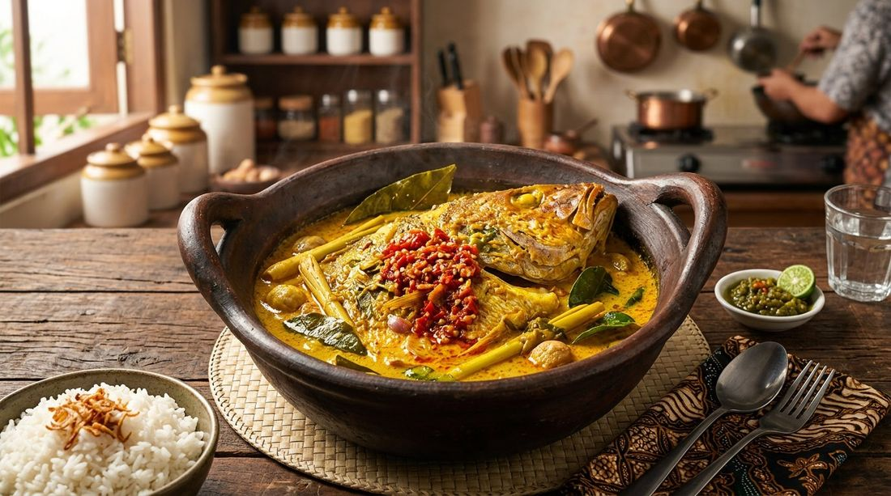

Khas Minang
Halal
Resep Utama Nusantara
Gulai Kepala Ikan Kakap Khas Padang
Gulai kepala kakap kuah santan kaya rempah dengan paduan kunyit, daun mangkokan, dan asam kandis yang memberikan cita rasa gurih asam pedas nan autentik.
Persiapan Bahan15 Menit
Waktu Masak35 Menit
Kelengkapan Bahan0 / 9 Siap